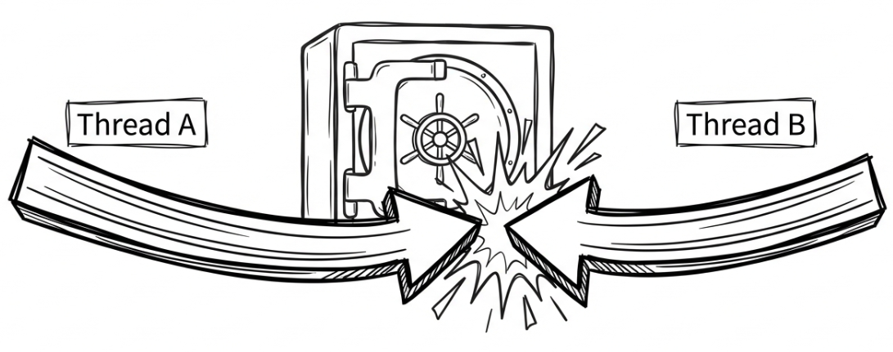
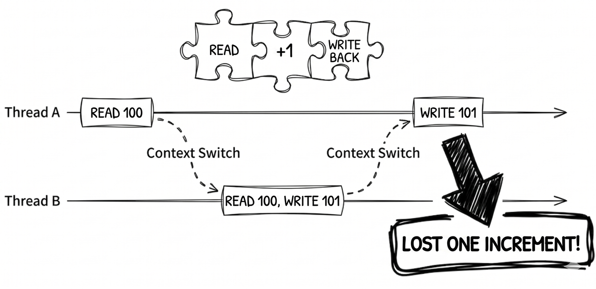
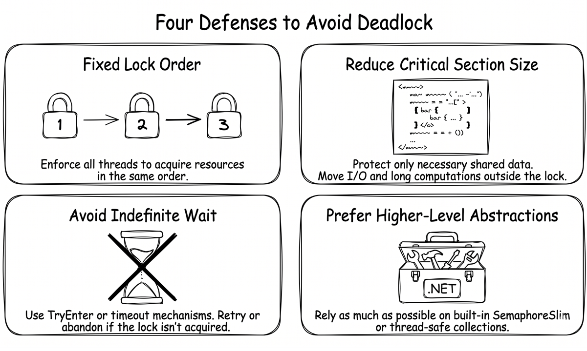
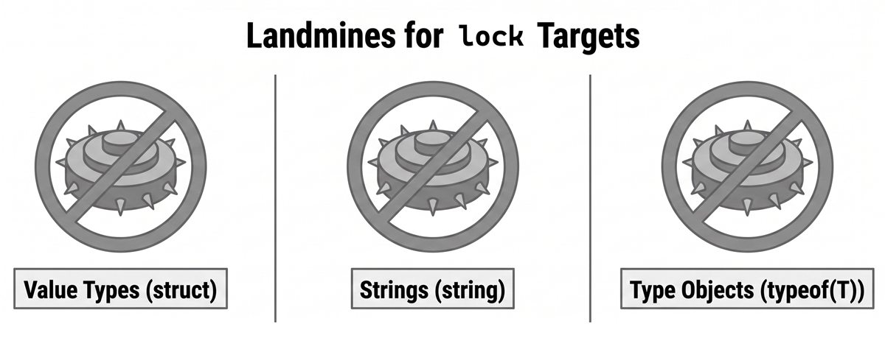
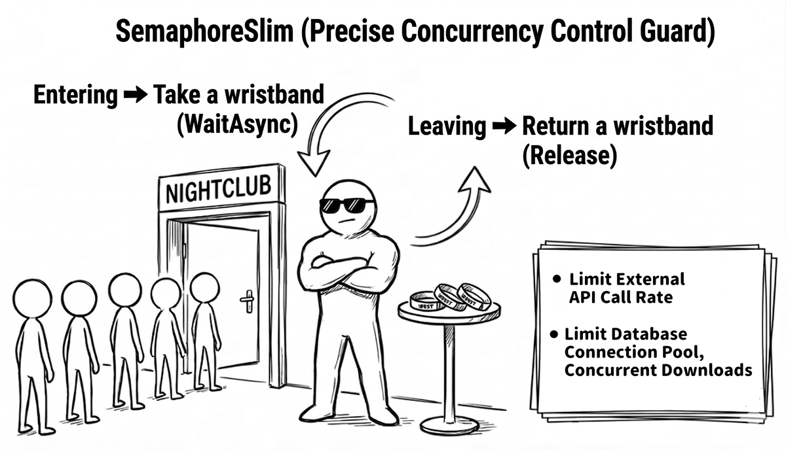
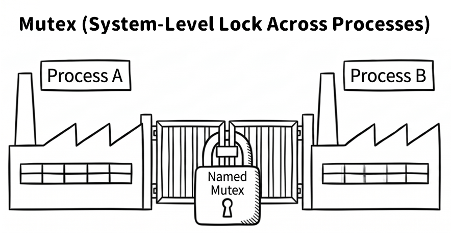
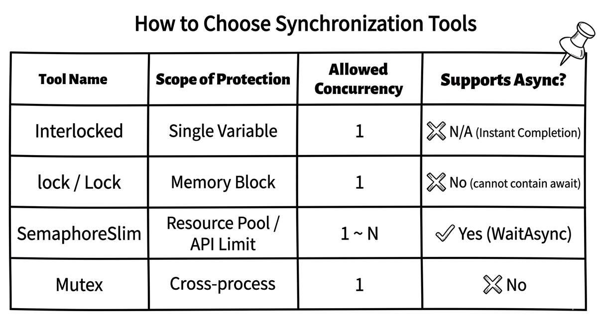

Chapter 5: Thread synchronization and classic problems

So far, we have learned how to use Task.Run and async/await to perform asynchronous and concurrent work. The former is commonly used to move CPU-bound work onto background threads, while the latter lets us wait for I/O without blocking a thread, helping the application stay responsive. But once multiple threads begin to run truly in parallel, another, trickier problem appears: what happens if they need to access the same data at the same time?
Imagine a banking system in which account A and account B both transfer money into account C at the same time. If the system does not handle those two concurrent operations correctly, account C may end up with the wrong final balance, causing losses for the bank or its customers.
That is exactly the problem that thread synchronization is meant to solve. Its core goal is simple: when multiple threads access shared resources, data integrity and consistency must not be compromised.
This chapter steps into one of the most important and challenging areas of multithreaded programming. By the end, you will be able to:
- Understand why synchronization is needed through concrete examples.
- Recognize two classic problems: race condition and deadlock.
- Use the most important synchronization tools in .NET:
Interlocked,lock,SemaphoreSlim, andMutex.
Why synchronization is needed: the risk of shared data
Consider a simple counter example. The program starts two tasks, and each task increments the same shared counter variable, counter, one million times:
int counter = 0;
// Start two tasks that increment counter concurrently.
Task task1 = Task.Run(() =>
{
for (int i = 0; i < 1_000_000; i++)
{
counter++;
}
});
Task task2 = Task.Run(() =>
{
for (int i = 0; i < 1_000_000; i++)
{
counter++;
}
});
// Wait for both tasks to finish.
Task.WaitAll(task1, task2);
Console.WriteLine($"The final counter value is: {counter}");Intuitively, we would expect the final result to be 2000000. However, when you run this code, you will usually find that the output is unreliable and often falls short of 2000000. The final number might be 1384127 or 1098221, and it might differ from run to run. Occasionally, it may even “happen to look correct.” This is one of the hardest parts of concurrent programming: bugs do not always appear consistently, and tiny timing differences in scheduling can determine whether the problem surfaces at all.
A real run might produce results like these:
Note: The result may differ every time you run it, and now and then it might even “accidentally look correct” and produce 2000000.
Source code: DemoRaceCondition
So why is the final counter value not 2000000? The problem lies in the seemingly simple expression counter++. If we look at what the computer is really doing, this is not an atomic operation. It is actually made up of three separate steps:
- Read the current value of
counterinto a CPU register. - Add one to that value inside the register.
- Write the new value back to the memory location of
counter.
Because these three steps can be interrupted and the operating system’s scheduler can perform a context switch between any two machine instructions, the following situation can occur when two threads run the code simultaneously:
Thread Areads the value ofcounter, say100.- A
context switchhappens, and the OS gives control of the CPU toThread B. Thread Balso reads the value ofcounter, which is still100.Thread Badds one, making it101, and writes that value back tocounter. Nowcounteris101.- Another
context switchhappens, and control returns toThread A. Thread Aresumes where it left off, adds one to its register value, which is still100, and gets101.Thread Awrites101back tocounter.
In the end, both threads performed an increment, but counter moved only from 100 to 101, instead of the expected 102. One increment was lost. Once this happens hundreds of thousands of times, the large gap in the final result is no longer surprising.

Classic problems
The counter example above demonstrates the first classic difficulty in multithreaded programming: the race condition. To build a solid foundation, let’s define it clearly, and then look at another equally common—and often even harder to diagnose—problem: deadlock.
Race condition
A race condition describes unpredictable behavior in which the final result of a program depends on the relative timing of threads running concurrently.
The counter example is a textbook race condition. Because the “read-modify-write” sequence behind counter++ can be interrupted at any time by another thread, the final result depends on which thread “gets there first,” and the outcome becomes unpredictable.
Note
Race conditions are among the hardest multithreading bugs to debug because they are usually intermittent and difficult to reproduce reliably. More concretely, the exact same code may appear almost problem-free on a dual-core development machine, yet surface much more frequently on a production server with many CPU cores, where true parallel execution becomes far more likely. The most reliable approach is to identify every shared resource accessed by multiple threads and protect it appropriately, whether through synchronization, immutable data, or by avoiding shared mutable state altogether.
Deadlock
If a race condition feels like everybody “rushing at once,” then a deadlock is more like everybody being stuck in a standoff.
This usually happens when two or more threads each hold a resource the other needs, while simultaneously waiting for the other side to release its resource. Without outside intervention, this creates an infinite cycle of waiting.
Here is a classic bank-transfer analogy. Suppose two threads are running:
Thread A: transfer money from account X to account Y.Thread B: transfer money from account Y to account X.
To ensure the transfer is atomic, we require that an account must be locked before it is modified. Now imagine the following execution order:
Thread Asuccessfully locks account X.Thread Bsuccessfully locks account Y.Thread Atries to lock account Y so it can finish the transfer, but Y is already locked byThread B, soThread Agoes into a waiting state.Thread Btries to lock account X so it can finish the transfer, but X is already locked byThread A, soThread Balso goes into a waiting state.
At this point, Thread A is waiting for Thread B to release Y, while Thread B is waiting for Thread A to release X. Since neither side can proceed, they wait forever, and the transfer system locks up completely.
Common deadlock-prevention strategies
Deadlocks usually do not involve a single lock. They happen when multiple locks wait on each other in a cycle. Here are a few common deadlock-prevention strategies worth remembering. We will discuss the specific .NET types later in the chapter:
- Use a fixed lock-acquisition order. When multiple resources must be locked together, every thread must follow the same order. In the bank-transfer example, we could say, “Always lock the lower account number first, then the higher one.” That way, whether the transfer goes from X to Y or from Y to X, all threads try to lock the same account first. This removes the possibility of circular waiting at its root. If everyone always locks X before Y, you can no longer end up with thread A holding Y while waiting for X while thread B holds X and waits for Y.
- Keep the critical section small. Protect only the necessary shared data. In other words, once you take a lock, do not place I/O, long-running computations, or waiting operations inside it.
- Avoid waiting forever. Prefer “try to acquire the lock” APIs when possible, such as
Monitor.TryEnter, or waiting APIs that support a timeout, such asMutex.WaitOne(timeout). If the lock cannot be acquired, give up or retry later instead of blocking forever. - Prefer higher-level abstractions. If
SemaphoreSlim, thread-safe collections, or message queues can solve the problem, avoid hand-writing coordination logic across multiple locks unless absolutely necessary.

Synchronization mechanisms
To address the risks of race conditions and deadlocks, .NET provides several synchronization mechanisms. Although they differ in implementation details, they all serve the same fundamental purpose: defining and protecting a critical section in your code. This ensures that only a limited number of threads—sometimes only one—can enter that block at any given time.
To address different concurrency needs, this section covers the most common tools first, then moves on to more specialized scenarios:
Interlocked: The lightest-weight choice when you only need atomic operations on a single shared field, such as a counter or a state flag.lockandSystem.Threading.Lock: The default choices when you need to protect a shared resource and ensure exclusive access.SemaphoreSlim: Useful when you need to limit concurrent access to “at most N at a time.”Mutex: Useful for cross-process synchronization, such as preventing multiple instances of an application from running simultaneously.
Once you understand these four categories, you can quickly choose the right mechanism based on the scope of synchronization and the number of concurrent entries allowed.
Interlocked: atomic operations on a single field
When you are working with simple scenarios such as counters, state flags, or reference swaps, and you only need to operate on one shared field, the lightweight Interlocked class is often a good fit.
Interlocked provides atomic operations backed by guarantees at the CPU and operating-system level. Common methods include:
Interlocked.Increment/DecrementInterlocked.AddInterlocked.ExchangeInterlocked.CompareExchange
Next, let’s use Interlocked.Increment to fix the counter problem from earlier in the chapter. The following example uses Parallel.For to perform one million increments, while Interlocked.Increment guarantees that each increment happens atomically and does not interfere with the others:
Here, Parallel.For is the parallel loop utility provided by .NET. It automatically spreads iterations across multiple threads. In this example, we deliberately use it to create a “many threads competing at once” scenario so we can verify the atomicity guarantee of Interlocked.Increment. We will cover the Parallel class in more detail in chapter 7.
Source code: DemoInterlocked
That said, while Interlocked is excellent for solving counter-style races, its scope is limited. It is suitable only for atomic updates to a single field. Once your business logic involves multiple fields that must change together and remain consistent, Interlocked is no longer enough. Even if you call an Interlocked method on each field separately, other threads may still observe an inconsistent intermediate state—for example, after the first field is updated but before the second one is. In such situations, you should use lock or another mechanism that protects the entire critical section.
The lock keyword: the simplest lock
lock is one of the most widely used synchronization mechanisms in C#. It ensures that only one thread can enter a lock block at a time.
To use lock, you must first prepare a lock object that all participating threads can access. In practice, that object is usually a private readonly object field.
Here is the broken counter example rewritten using lock:
// Protect the counter with lock.
var counter = new ThreadSafeCounter();
Task task1 = Task.Run(() =>
{
for (int i = 0; i < 1_000_000; i++)
counter.Increment();
});
Task task2 = Task.Run(() =>
{
for (int i = 0; i < 1_000_000; i++)
counter.Increment();
});
Task.WaitAll(task1, task2);
// The result is always 2000000.
Console.WriteLine($"The final counter value is: {counter.Value}");
public class ThreadSafeCounter
{
private int _count = 0;
private readonly object _lock = new object(); // Lock object
public void Increment()
{
lock (_lock) // Enter the critical section
{
_count++;
}
}
public int Value
{
get
{
// In this specific example,
// locking the getter is not strictly required.
lock (_lock)
{
return _count;
}
}
}
}One detail is worth highlighting. In the execution flow of this sample, the main program already calls Task.WaitAll and waits for both tasks to finish before it reads the Value property. For that reason, the getter would still return the correct result even without a lock here. Task.WaitAll guarantees that all writes from both tasks have completed before the read happens, so there is no race in this particular read. However, if you intend to design ThreadSafeCounter as a reusable thread-safe type, a stricter approach is better: both reads and writes should use the same lock. This is the safer and more widely recommended practice.
Source code: DemoLock
With this change in place, any thread that wants to increment _count or read Value must first acquire the exclusive lock on _lock. If another thread already holds the lock, subsequent threads must wait. Once the current owner leaves the lock block, the lock is released automatically, and the next waiting thread gets a chance to enter. Through this mechanism, the “read-modify-write” operation behind _count++ is wrapped into a single indivisible unit, and readers will not observe an intermediate value.
The reasons _lock is declared as private readonly object are:
- private: only code inside this class can lock it, preventing external code from accidentally locking the same object and causing deadlocks.
- readonly: the lock object itself cannot be accidentally replaced later.
- object: any reference type could work, but
objectis the simplest option.
There is one critical warning to keep in mind. While any reference type can technically serve as a lock target, you should avoid locking the following three types because doing so can lead to hard-to-diagnose deadlocks or synchronization bugs:
- Value types (
struct): you cannot directly use a value type as alocktarget because the C# compiler rejects it. Be especially careful not to “work around” that compiler error by manually casting the value toobjectbefore locking. This causes boxing, creating a different object each time, which makes the locking protection useless. - Strings (
string): this is a well-known anti-pattern. Because of .NET string interning, identical string literals and strings explicitly passed tostring.Intern()may refer to the same object instance. If you lock"my_lock"and some unrelated third-party library also locks"my_lock", the two pieces of code can block each other, causing surprising cross-module deadlocks. Dynamically constructed strings are not usually interned, but you cannot safely assume that third-party code will never intern the same value, so strings as a whole are risky lock objects. - Type objects (
typeof(T)): the reason is similar to strings. TheTypeinstance representing a given type is unique and globally shared within the process.

Note
C# does not allow
awaitinside alockblock, regardless of whether the target is a traditionalobjector the newer.NET 9+typeSystem.Threading.Lock. In the former case, the issue is thread affinity inMonitor. In the latter case, the issue is thatLock.Scopeis aref struct, which cannot live across anawaitboundary. If a critical section must wait for asynchronous work, use an async-friendly mutual-exclusion approach such asSemaphoreSlim(1, 1)instead, but be aware of its own traps, which we will discuss later.
The relationship between traditional lock(object) and Monitor
When the target of lock is a normal reference type, such as object, the lock keyword can be viewed as syntactic sugar over the Monitor class. When you write:
the compiler turns it into code roughly like this:
That translation logic mainly applies to the traditional lock(object) form. Starting with C# 13 and .NET 9, if your lock object is System.Threading.Lock, the compiler instead uses a specialized, optimized path, effectively generating using (_lock.EnterScope()) { ... } under the hood instead of the traditional Monitor.Enter/Exit.
In most situations, using the lock keyword directly is sufficient. It is concise and automatically handles cleanup. However, in certain advanced cases, calling Monitor methods directly provides greater control. For example, one of the deadlock-prevention strategies mentioned earlier, “avoid waiting forever,” can be implemented with Monitor.TryEnter:
object _lock = new object();
// Try to acquire the lock for at most 5 seconds
// instead of blocking forever.
if (Monitor.TryEnter(_lock, TimeSpan.FromSeconds(5)))
{
try
{
// The lock was acquired successfully. Run the critical section.
Console.WriteLine("Lock acquired. Doing work...");
}
finally
{
Monitor.Exit(_lock);
}
}
else
{
// The lock could not be acquired. Give up or choose another strategy.
Console.WriteLine(
"Could not acquire the lock. " +
"Giving up or retrying later.");
}The benefit of this approach is that if the program cannot acquire the lock within the timeout, it can choose an alternative strategy instead of waiting indefinitely, reducing the risk of deadlock.
Further reading: Microsoft documentation, The lock statement - ensure exclusive access to a shared resource
A more modern lock: System.Threading.Lock (.NET 9+)
As mentioned earlier, traditional lock (object) is expanded by the compiler into Monitor.Enter/Exit. In .NET 9 or later, if you need a lock within a single process, you can use the dedicated lock type System.Threading.Lock instead. Its usage looks very similar to the traditional lock, but its intent is clearer, and it can be more efficient in high-concurrency scenarios:
Besides working with the lock keyword, System.Threading.Lock also provides a more explicit API: EnterScope(). This method returns a ref struct named Lock.Scope. Although it does not implement IDisposable, it does expose a Dispose() method, which makes it a natural fit for using:
That means the lock is released automatically when execution leaves the using block. See the Microsoft documentation: Lock.Scope struct.
Source code: DemoLockNet9Plus
One benefit of this style is that, when used with using, the lock is still released automatically even if an exception occurs. System.Threading.Lock also provides more advanced methods such as Enter, TryEnter, and Exit, which give you more explicit control when you need it.
Recommendation
If your project has already moved to .NET 9 or later, prefer
System.Threading.Lockover the traditionalobjectlock when practical. It gives you clearer intent, and in lightly contended scenarios, it also performs better than the traditionalMonitor-based approach.
Further reading: Microsoft documentation, Lock Class
The boundary between lock and async
This is a good place to pause and organize a few key ideas, because developers often stumble here when transitioning from synchronous to asynchronous code:
lockis a thread-oriented synchronization mechanism. Its job is to protect short, synchronous critical sections that do not involve I/O blocking.- C# does not allow
awaitinside alockblock, regardless of which lock target is used:lock(object): the compiler expands it intoMonitor.Enter/Exit, andMonitorhas thread affinity. In other words, the thread that acquires the lock must also release it. However, after anawaitexpression, execution may resume on a different thread, preventing the lock from being released correctly.lock(Lock)(.NET 9+): when the target isSystem.Threading.Lock, the compiler expands it intousing (_lock.EnterScope()), andLock.Scopeis aref struct. Aref structcannot live across anawaitboundary, so the compiler rejects this usage directly. The deeper reason is thatawaitlifts locals into fields of the async state machine, andref structvalues are not allowed to become fields.
If your requirement is “only one asynchronous flow may enter at a time,” then you should use SemaphoreSlim(1, 1) as the mutual-exclusion mechanism instead. The first 1 is the initial count, and the second 1 is the maximum count. When both are 1, at most one flow may enter at a time, which is effectively mutual exclusion. Here is the typical pattern:
This “async mutual exclusion” pattern is very common in I/O-bound code.
Further reading: Microsoft documentation, SemaphoreSlim Class
SemaphoreSlim: limiting concurrency
The lock mechanism discussed earlier provides exclusive access—one thread at a time. However, sometimes our requirement is not “only one,” but rather “at most N at a time.” This is where SemaphoreSlim comes in.
You can think of SemaphoreSlim as the bouncer at the entrance of a nightclub. Suppose the club is allowed to hold at most 100 guests, and the bouncer has 100 wristbands, corresponding to the initial count of the semaphore. Every time a guest enters, the bouncer gives out one wristband. Every time a guest leaves, the bouncer takes one back. Once all wristbands have been handed out, anyone else who wants to get in has to wait in line until a wristband becomes available again.

For example, it can limit:
- How many files can be downloaded simultaneously.
- How many concurrent calls can be made to an external API.
- How many database connections can be used concurrently.
It is also well suited to async/await because it provides the WaitAsync() method. This allows your code to wait for an available “wristband” asynchronously without blocking a thread. Here is a typical example:
// Allow at most 3 operations to perform
// this expensive work at the same time.
SemaphoreSlim _semaphore = new SemaphoreSlim(3, 3);
async Task PerformExpensiveOperationAsync(int id)
{
Console.WriteLine($"Task {id} is waiting to enter...");
// Wait asynchronously for a slot.
await _semaphore.WaitAsync();
try
{
Console.WriteLine($"--> Task {id} entered and is running...");
await Task.Delay(2000); // Simulate expensive work
}
finally
{
// Always release the slot.
_semaphore.Release();
Console.WriteLine($"<-- Task {id} left.");
}
}Notice that Release() is called inside the finally block so the slot is returned even if an exception occurs. Also notice that when we declared the semaphore, we explicitly set both maxCount and the initial count to 3. This not only clearly communicates that “the capacity limit is three,” but also helps the runtime catch bugs earlier if someone accidentally calls Release() too many times and exceeds the configured maximum.
Source code: DemoSemaphoreSlim
Example output, abbreviated:
Task 1 is waiting to enter...
--> Task 1 entered and is running...
Task 2 is waiting to enter...
--> Task 2 entered and is running...
Task 3 is waiting to enter...
--> Task 3 entered and is running...
Task 4 is waiting to enter...
Task 5 is waiting to enter...
Task 6 is waiting to enter...
...
<-- Task 1 left.
<-- Task 3 left.
<-- Task 2 left.
--> Task 4 entered and is running...
--> Task 5 entered and is running...
--> Task 6 entered and is running...
...
All tasks have finished.This output clearly illustrates the behavior. Initially, only three tasks can enter. As tasks leave, waiting tasks can enter in turn.
Important: the reentrancy trap of
SemaphoreSlimWhen converting traditional synchronous code that uses
lockinto an asynchronous version that usesawait SemaphoreSlim.WaitAsync(), one of the easiest mistakes to make is forgetting about reentrancy.
lockis reentrant and is tied to a thread. If the same thread enters the samelockagain, it does not get stuck waiting on itself.
SemaphoreSlim, however, has no concept of thread ownership at all. You can think of it as recognizing wristbands, not people. If the same asynchronous execution flow—such as a recursive call or method A awaiting method B while both try to acquire the sameSemaphoreSlim—ends up callingWaitAsync()twice, the second call will wait for a slot that will never become available. In other words, the flow deadlocks itself. This detail is easy to miss when designing async mutual exclusion, so treat it with care.
Mutex: cross-process synchronization
A Mutex (short for “mutual exclusion”) serves a similar purpose to lock by providing exclusive access. However, it has one key difference: a Mutex can be system-wide. This means it can synchronize threads across different processes.
This is useful for scenarios such as:
- Ensuring only a single instance of an application is running within the scope of a named mutex.
- Coordinating access to shared files or hardware resources across multiple independent applications.

The following example demonstrates one of the most common uses of a named Mutex: detecting whether another instance already holds the same system-level lock.
Note
The following example uses the new .NET 10 type
NamedWaitHandleOptionswithCurrentUserOnlyandCurrentSessionOnly. If your target framework is .NET 9, you can remove that constructor argument and fall back to the traditionalnew Mutex(false, name)form.
// Create a named mutex.
// The name should be a unique
// cross-platform-friendly string to avoid collisions.
// In .NET 10, NamedWaitHandleOptions can be used
// to define the visibility scope explicitly.
using Mutex mutex = new Mutex(
false,
"com.example.myawesomeapp.single-instance.A1B2C3D4",
new NamedWaitHandleOptions
{
CurrentUserOnly = true,
CurrentSessionOnly = true
});
try
{
// Try to acquire the lock. Wait 0 milliseconds
// so the call returns immediately.
if (!mutex.WaitOne(0))
{
Console.WriteLine(
"The application is already running. " +
"Do not open it twice.");
return; // Exit the application
}
try
{
Console.WriteLine(
"Application started successfully. " +
"Press Enter to exit...");
Console.ReadLine();
}
finally
{
// Make sure the mutex is released when leaving.
mutex.ReleaseMutex();
}
}
catch (AbandonedMutexException)
{
// Defensive handling:
// if the previous owner of the mutex ended abnormally,
// and at that time there were still other waiters
// or open handles that kept the named mutex object alive,
// then the next waiter to succeed on
// WaitOne may receive AbandonedMutexException.
// Receiving this exception means this instance now owns the mutex,
// but it does not guarantee
// that the protected shared state is still safe
// or consistent.
Console.WriteLine(
"Detected that the previous application instance " +
"did not close cleanly (abandoned mutex).");
// ... state validation or repair logic could go here ...
try
{
Console.WriteLine(
"Application started successfully. " +
"Press Enter to exit...");
Console.ReadLine();
}
finally
{
mutex.ReleaseMutex();
}
}Source code: DemoMutex
There are two important considerations. First, the naming style of a mutex affects its cross-platform behavior. On Windows, prefixes such as Global\ and Local\ affect the visibility of the lock across terminal sessions. If no prefix is specified, the behavior defaults to Local\. However, on Linux or macOS, these prefixes do not necessarily have the same meaning. Therefore, if your goal is a “single instance across platforms,” it is better to avoid platform-specific prefixes. Instead, use a unique reverse-domain-style name appended with a GUID or another uniquely identifiable suffix. Always test this behavior on the actual target platform before shipping.
Second, in modern .NET, you should carefully consider the security scope of named wait handles. If you use the traditional new Mutex(false, name) form, the resulting lock is not necessarily limited to the user who created it. If another user on the same machine runs the same code, their process might open a mutex with the identical name and interfere with yours. If your requirement is strictly “single instance for the current user,” use NamedWaitHandleOptions.CurrentUserOnly to make that intent explicit. In the sample above, we also set CurrentSessionOnly = true, which further limits the lock to the current session of the current user. If you truly need sharing across sessions, that option can be set to false instead.
Warning: the abandoned-mutex trap
A cross-process
Mutexhas a unique exception behavior. If the thread holding the mutex ends abnormally and never gets a chance to callReleaseMutex(), the outcome depends on whether there are any waiters at that time:
- If other threads are waiting and the mutex object stays alive because handles still exist, then the next waiter that successfully acquires the mutex will definitely receive
AbandonedMutexException. This exception means ownership of the mutex has been transferred to your code, but it is also a warning sign: the previous owner may have died before leaving the protected shared state in a clean condition. If the mutex protects an important data structure, validate or repair the state before continuing. If it is only used as a single-instance gate, logging a warning and continuing is often acceptable. In this case, a defensivecatch (AbandonedMutexException)is appropriate.- If there are no waiters and all handles have been closed, then the named mutex object itself disappears. The next process creates a brand-new mutex with the same name and does not receive
AbandonedMutexException. In this scenario, no special handling is typically required.
Overall, Mutex is a heavier synchronization tool than lock and incurs greater performance overhead due to operating-system kernel calls. For most cases where you only need to coordinate threads within a single application, lock or SemaphoreSlim is a better and more efficient choice.
Related Microsoft documentation:
Summary
This chapter introduced one of the trickiest categories of problems in multithreaded programming. We started with a simple counter example and saw how unprotected shared data can produce a race condition. Then, through the bank-transfer analogy, we saw how deadlocks can trap multiple threads in an endless cycle of waiting.
To address these challenges, we explored four key synchronization mechanisms:
Interlocked: for atomic operations on a single shared field, such as incrementing a counter or swapping a flag. In the right scenario, it is lighter thanlock.lockandSystem.Threading.Lock: for building simple exclusive critical sections and protecting a single in-memory resource. These are the most common mutual-exclusion tools in day-to-day development.SemaphoreSlim: for limiting how many operations can enter a resource or critical section simultaneously. It is a powerful tool for controlling concurrency levels and throttling.Mutex: for cross-process synchronization, useful for system-level coordination such as preventing an application from launching multiple instances.
With these synchronization tools in mind, you can write reliable concurrent code with more confidence. Even so, manually managed locks still carry hidden risks. A mistake as simple as forgetting to release a lock in a finally block can cause serious problems.

In the next chapter, we will explore the thread-safe collections provided by .NET. These specially designed collections handle many of the tricky synchronization details internally, allowing us to work with concurrent data more safely.
Buy the ebook: Amazon Google Play Books Kobo